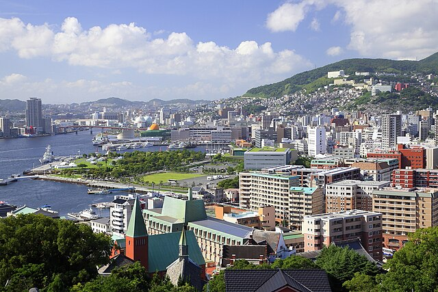

Nagasaki
Nagasaki est le chef-lieu de la préfecture éponyme, situé sur l’île de Kyushu au sud du Japon. Seule porte ouverte sur le monde pendant 2 siècles durant l’époque Edo, cette ville cosmopolite détone par rapport à la ville japonaise typique. Elle fut également, hélas, le deuxième théâtre de la bombe atomique en 1945.
Dans le top 5 des plus grandes villes du Kyushu, Nagasaki est parfois oubliée des touristes qui concentrent leur découverte de l’île via le Shinkansen, du nord (Fukuoka) au sud (Kagoshima). Tout à l’ouest et coincée dans sa baie éponyme, Nagasaki manque ainsi de visibilité. Ce qui est quasiment un comble au vu de son riche passé historique et largement ouvert sur le monde !
Bénéficiant d’un climat chaud et ensoleillé, la ville se visite facilement depuis ses terres hautes en descendant vers la mer. Des quartiers assez différents se succèdent et témoignent des grandes lignes de l’histoire japonaise.
Entre les stations de tramway Urakami, l’on commence par un lourd passé, celui de la Seconde Guerre mondiale. Le parc commémoratif ainsi que le Musée associé se tiennent en lieu et place de l’épicentre de l’explosion de la bombe atomique, le 9 août 1945.
Accessible aisément en téléphérique, le mont Inasa offre de très belles vues sur la ville et le port. Construite dans une cuvette, Nagasaki s’embellit à la nuit tombée.